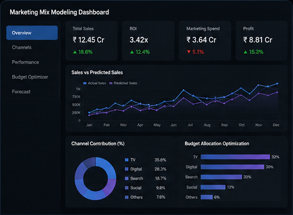

PROJECT 01
Marketing Mix Modeling
Budget allocation & ROI measurement
Built an end-to-end Marketing Mix Modeling workflow using OLS regression, feature engineering, VIF checks, validation and channel contribution analysis across 500K+ records and 5 marketing channels.
500K+recordsR² 0.85model fit+25%budget efficiency+12%ROI
◆ Professional case study